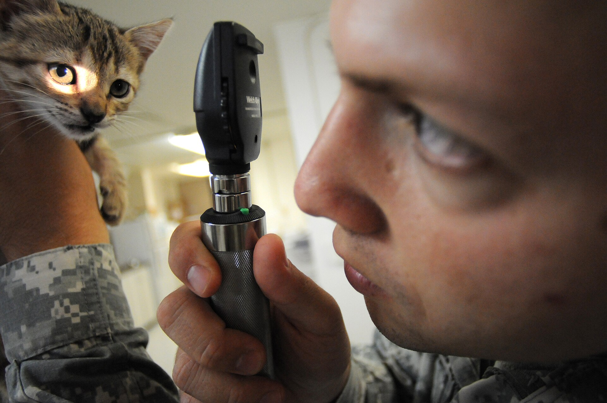
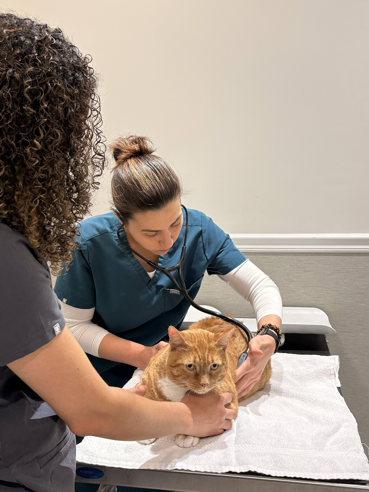
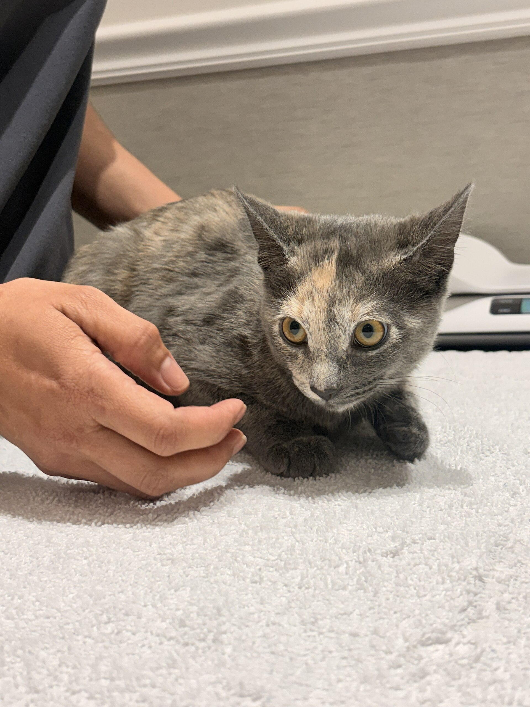

Önce hayvanı tanıtın.
Türünü, adını ve yaklaşık yaşını biliyorsanız belirtin.
Mesai dışı veteriner aramasına hazırlanmak için kısa bir bilgi sayfası.
Arama notunu hazırla

Durumu birkaç açık bilgiyle anlatın.
Not oluşturTelefon açarken hayvanı, gözlediğiniz durumu ve ne zamandır sürdüğünü kısaca aktarın.
Bu örnek sayfa nöbetçi klinik bulmaz veya tanı koymaz. Gerçek klinik adı ve telefon numarası işletme bilgileriyle eklenmelidir.
Türünü, adını ve yaklaşık yaşını biliyorsanız belirtin.
Kendi sözlerinizle ne olduğunu ve ne zamandır sürdüğünü söyleyin.
Varsa kullandığı ilaçları ve önceki sağlık kayıtlarını hazır bulundurun.
İlçe bilginiz, size uygun kliniği konuşmayı kolaylaştırır.


Bu örnek taslakta şehir, nöbet listesi ve klinik telefonu tanımlı değil. Yayın öncesi doğrulanmış yerel nöbet bilgisi eklenmelidir.
Hayır. Not, telefon görüşmesinde aktaracağınız bilgileri toparlamaya yarar; değerlendirmeyi veteriner hekim yapar.
Not yalnızca bu sayfada oluşturulur. Herhangi bir sunucuya iletilmez ve kayıt altına alınmaz.
Evet. Alanları düzenleyip notu yeniden oluşturabilirsiniz. Formdaki örnek metinler gerçek hasta bilgisi değildir.
Nöbetçi kliniği ararken gerekli bilgileri kısa ve anlaşılır biçimde aktarın.
Bu tema, gerçek klinik bilgileri eklenecek bir örnek sayfadır.
Arama notuna dönİşletme adı, nöbet telefonu ve hizmet bölgesi eklenecek.